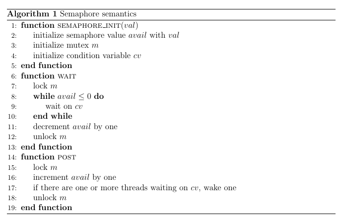

Semaphore
Concurrency is a big topic that I'm planning to write about more for the upcoming days. In this post, I'll cover the concept "semaphore", a very important concept when we talk about synchronization. I'll walk through concept and offer an implementation of semaphore in C++ with a working example. Lastly, I'll apply golang's channel concept to help us better understand semaphore.
Why Semaphore?
Lock (e.g., mutex), condition variable, and semaphore are three tightly-coupled concepts that everyone will learn about in their undergraduate OS course. Some textbook presents those concepts in the ordering shown above and talks about the missions that each concurrency primitive can achieve. In practice, however, I always find it is challenging to make choice when multiple options present for handling a specific usage scenario. The following is some rules of thumb I like to use when work with those concepts in practice:
-
Semaphore replaces "everything": I can use semaphore to work both as lock to protect shared data across multiple threads (i.e., threads can access data but only one at a time) and as condition variable 1 to order the events (e.g., ordering the access of shared data; ordering the execution of threads).
-
Mutex is just a easeir tool to use under lock scenario. In other words, we can use semaphore as the lock but implements semaphore itself requires more LOC than mutex (i.e., if we only need lock, use mutex).
-
Use condition variable and mutex to implement semaphore and use semaphore as the abstraction for the rest of code. Certainly, one can say using condition variable + mutex for threads ordering but essentially, he is using semaphore (by constructing it with condition variable + mutex first) without explicitly stating it.
Note
I find how we understand those three concepts implicitly ill shaped by C, which is the default language used in undergraduate OS course. For example, C POSIX has a nice "semaphore.h" inteface that allows user to use semaphore directly. Such existence of interface makes one to direct use semaphore.h for using semaphore and pthread.h for condition variable and mutex. The consequence of such usage is that one can easily think that if they are using condition variable + mutex, they are using condition variable instead of semaphore on conceptual level. This is wrong! What they are really doing is to first construct semaphore using condition variable + mutex and then using semaphore to achieve the desired goal. The only difference between their usage and using semaphore directly is the lack of semaphore as an object abstraction. From this angle, I think C++ with LLVM compiler on Mac does a much better job by deprecating POSIX semaphore.h C library. This forces me to use standard mutex and condition variable to implement semaphore first before using it (also makes the code much more portable), which helps me to discover this sublte relationship among three concepts that is masked out in OS and C world. However, I'm not stating that all the condition variable + mutex usage will be equivalent to semaphore but semaphore can achieve the same purpose as condition variable with cleaner encapsulation.
Hopefully, by now, I can convince you why we need semaphore: it is such a indispensable tool in the pocket when we want to deal with commonly-seen concurrency situation: used as the lock to protect shared variable; used as ordering mechanism to facilitate threads execution order and concurrent event ordering.
Concept and Implementation
Before we jump into semaphore, let's revisit mutex and condition variable concepts first because we will leverage those two concepts in our C++ implementation. Mutex is used to allow many threads to acess the same variable but only do so one at a time. It is a useful tool to avoid data race: a situation where two threads acess the same variable concurrently and at least one of the access is a write (e.g., Alice deposits $200 into bank with initial balance is 0; Bob deposits $100 to the same account and the final balance can be $200 2). Whenever a thread wants to modify a shared variable, it needs to acquire mutex first and release the mutex after the modification. Condition variable is used to put one thread to sleep until the condition the thread is waiting for comes true. A condition variable is an explicit queue that threads can put themselves on when some state of execution (i.e., some condition) is not as desired (by waiting on the condition); some other thread, when it changes said state, can then wake one (or more) of those waiting threads and thus allow them to continue (by signaling on the condition).
A semaphore is an object with an integer value that we can manipulate with an increment-value method (let's denote such method as post()) and a decrement-value method (let's denote such method as wait()). Then, the semantics of semaphore is defined by
the functionality of post() and wait().
Note
In the following, when we talk about the value of semaphore, we really mean the integer value contained inside semaphore.
void post() {
// increment the semaphore value by one
// if there are one or more threads waiting on the semaphore, wake one
}
void wait() {
// decrement the semaphore value by one
// wait if the resulting semaphore value is negative
}
Here is the pseudo code for the semaphore implementation:

Now, let's implement semaphore in C++ with the semantics stated above.
class Semaphore
{
private:
size_t avail;
std::mutex m;
std::condition_variable cv;
public:
// only one thread can call this; by default, we construct a binary semaphore
explicit Semaphore(int avail_ = 1) : avail(avail_) {}
void wait()
{
std::unique_lock<std::mutex> lk(m);
cv.wait(lk, [this] { return avail > 0; });
avail--;
}
void post()
{
std::unique_lock<std::mutex> lk(m);
avail++;
cv.notify_one();
}
size_t available() const
{
return avail;
}
};
Since we modify the integer value of semaphore (avail) that can be updated by multiple threads concurrently,
we need to use mutex (m) to ensure only one thread doing the update.
In addition, since threads need to wake up or wait depending on situation, we need to use condition variable (cv).
The implementation itself follows some standard practice when working with condition variable.
Note
Here, we describes the procedure in C++ context; but steps generally applied in other languages. Also, the standard practice
normally done by the thread. However, since the thread simply calls post() and wait(), the practice is now presented in
the post() and wait() implementation.
For thread calling post() (i.e., the thread that intends to modify the value of semaphore), post() has to:
- acquire a std::mutex (usually via std::lock_guard)
- perform the modification while the lock is held (e.g.,
avail++) - execute notify_one or notify_all on the std::condition_variable 3
For thread calling wait() (e.g., any threads that intends to wait on the condition variable in semaphore), wait() has to:
- acquire a std::unique_lock
- execute wait 4, wait_for, or wait_until. The wait operations atomically release the mutex and suspend the execution of the thread.
- when the condition variable is notified, a timeout expires, or a spurious wakeup occurs, the thread is awakened, and the mutex is atomically reacquired. The thread should then check the condition and resume waiting if the wake up was spurious 5.
One might probably notice, there is no explicitly unlock or using while to check for the wait condition (avail > 0) inside the implementation. Actually, those operations happen but are hidden by the C++ library implementation:
-
We acquire mutex lock via std::unique_lock and since
std::unqiue_lockguarantees an unlocked status onmutexon destruction andstd::unqiue_lockdestructor will be automatically invoked when thewait()orpost()exits,mutexwill be unlocked on function exit. -
std::condition_variable::wait has the function signature
template< class Predicate > void wait( std::unique_lock<std::mutex>& lock, Predicate pred );(e.g.,cv.wait()) and inside the function, it does
while (!pred()) {
wait(lock);
}
Thus, cv.wait(lk, [this] { return avail > 0; }); can be expanded as
while (avail <= 0) {
wait(lk);
}
An intuitve read of cv.wait(lk, [this] { return avail > 0; }); is the thread will wait until avail > 0, the condition contained in the lambda function argument. This can probably saves some brain power to do the expansion shown above.
To make the implementation easier to understand, I borrow the reference implementation in C from OSTEP. Hopefully, it will make the C++ implementation clearer:
typedef struct __Zem_t {
int value;
pthread_cond_t cond;
pthread_mutex_t lock;
} Zem_t;
// only one thread can call this
void Zem_init(Zem_t*s, int value) {
s->value = value;
Cond_init(&s->cond);
Mutex_init(&s->lock);
}
void Zem_wait(Zem_t*s) {
Mutex_lock(&s->lock);
while (s->value <= 0)
Cond_wait(&s->cond, &s->lock);
s->value--;
Mutex_unlock(&s->lock);
}
void Zem_post(Zem_t*s) {
Mutex_lock(&s->lock);
s->value++;
Cond_signal(&s->cond);
Mutex_unlock(&s->lock);
}
Example
As one can probably see, semaphore doesn't offer much freedom when come to how much we can customize it. The only thing that can be set by the user
is the initial integer value of the semaphore (e.g., avail). In fact, that's the beauty of the semaphore: we can achieve various purposes with semaphore by initalizing it with different values. For exmaple, we can intialize the semaphore with value 1 to make the semaphore work like a lock (such semaphore is called binary semaphore):
Semaphore lk(1);
int balance = 0;
// deposit called by multiple threads to update balance
void deposit() {
lk.wait();
balance += 100;
lk.post();
}
Here is an intuitive description to understand semaphore based on this deposit example: Suppose there are five people want to withdraw money from the bank. Semaphore works like a key hanging on the bank door. Since the semaphore value is intialized with one, there is only one key hang on the door. The first person arrives at the bank is able to grab the key, open the door, and withdraw money. The rest four people have to wait in line for the key. Once the first person finishes the withdrawing, he puts the key back to the door and pat the next person's shoulder and tells her the key is available and she can go in. Now, the second person checks the key is indeed hang on the door and now she can grab it to withdraw. The whole process repeats for the rest three person waiting in the line. This describes the five threads with one semaphore situation.
We can also set semaphore value properly to order the threads execution. Consider the Leetcode Problem: 1114. Print In Order where we pass the same object Foo into three threads and let them calling appropriate print methods to print "first", "second", and "third" in such ordering without restricting which thread is assigned to print which word. For detailed example, see the problem description. The following implementation shows how we can use semaphore implementation shown above to achieve such ordering purpose: always print "first", "second", and "third" in order:
class Foo
{
Semaphore firstJobDone;
Semaphore secondJobDone;
public:
Foo(): firstJobDone(0), secondJobDone(0) {}
void first(function<void()> printFirst)
{
printFirst();
firstJobDone.post();
}
void second(function<void()> printSecond)
{
firstJobDone.wait();
printSecond();
secondJobDone.post();
}
void third(function<void()> printThird)
{
secondJobDone.wait();
printThird();
}
};
Both firstJobDone and secondJobDone have semaphore value of 0 when the Foo class is constructed.
Both second() and third() will call wait() method on respective semaphore; unless post() is called before wait(),
the value of semaphore will be 0, which will put threads calling second() and third() pause waiting on respective semaphore. Since first() doesn't call wait() initially, first() will be executed first. Then, firstJobDone.post() will be called, which will bring fristJobDone semaphore value to 1 and wake up the thread that wait on the semaphore: in this case, it's the thread calling second(). Since secondJobDone semaphore value is still 0, thread calling third() will continue to pause until thread with second() done the work and increment the semaphore value. The complete implementation with test can be seen here. Note that semaphore implementation used is abstracted in mysemaphore.h with implementation here. Note that for this specific question, we initialize semaphores in the Foo class. This is ok in this situation as there will be only one Foo object exists. However, a more common case is to intialize semaphores globally.
Note
Probably one may have noticed that the semantics of semaphore implementation has been slightly different than the
semantics of wait() and post() we defined above with the pseudo code comment. In fact, semaphore intially has
the invariant that: the value of the semaphore, when negative, is equal to the number of waiting threads 6. We use
invariant in the semantics definition instead of the actual implementation is to help remember semaphore functionality.
We certainly can modify the implementation to make it follow the invariant: we switch type of avail from size_t
to int and change the wait condition from avail > 0 to avail >= 0. The complete modified implementation can
be seen here. Note that to use this version of implementation in the
"print in order" example above, we need to intialize both semaphores to -1 instead of 0.
Glimpse from Golang
Recently, I learned about Golang for the work. The idea of using channel, the concept based on communicating sequential process (CSP), as the fundamental concurrency primitive really opens my mind (I've seen the idea in Python and Rust but Golang abuses the concept heavily). Such novel construction naturally brings new angle to re-examine the old concept: semaphore. The following examples are taken from The Go Programming Language with page number 241, 250, and 262.
The purpose of semaphore can be seen from limit parallelism: for example, no more than 20 concurrent calls to open a file. From the golang world, we can use a buffered channel of capacity \(n\) to construct the semaphore (or counting semaphore if we want to be specific). Recall that a buffered channel has a queue of elements with the maximum queue size \(n\) (i.e., capacity). A send operation on a buffered channel inserts an element at the back of the queue, and a receive operation removes an element from the front. Then the goroutine is blocked under the following conditions:
-
If the channel is full, the goroutine with send operation will be blocked until space is available in the queue due to a receive by another goroutine.
-
If the channel is empty, the goroutine with receiver operation is blocked until a value is sent to the queue by another goroutine.
Then, conceptually, to implement semaphore, each of the \(n\) vacant slots in the channel buffer (i.e., queue) represents a token entitling the holder to proceed. Token is acquired by sending a value to the channel and is released by receiving a value from the channel. Receiving a value creates a new vacant slot that potentially allows other goroutine to send the value (i.e., acquire token). As one can probably see, with this setting, we can allow at most \(n\) sends without an intervening receive.
Implement semaphore in this way is surprisingly simple: all we need is a buffere channel and perform send or receive appropriately. The book provides an example of crawling the web (the book is from Google engineers; no wonder):
// tokens is a counting semaphore used to
// enforce a limit of 20 concurrent requests.
var tokens = make(chan struct{}, 20)
func crawl(url string) []string {
fmt.Println(url)
tokens <- struct{}{} // acquire a token
list, err := links.Extract(url)
<-tokens // release the token
if err != nil {
log.Print(err)
}
return list
}
If we compare this Go's implementation with our C++ one, we can see that tokens <- struct{}{} works like wait(): if we
cannot send value to the channel, we wait until the channel has some vacant spot. <-tokens works like post(): we're done and thus release token so that another goroutine can do the work. To generalize this implementation, we normally can:
// 20 is the intialized semaphore value
var semaphore = make(chan struct{}, 20)
func some_work() {
semaphore <- struct{}{} // acquire token
defer func() { <-semaphore }() // release token
// do the work ...
}
To see how semaphore work as a lock (mutex) in Go, we can revisit previous concurrent balance update situation and make both deposit and check the balance concurrent-safe:
var (
semaphore = make(chan struct{}, 1) // a binary semaphore guarding balance
balance int
)
func Deposit(amount int) {
semaphore <- struct{}{} // acquire token
balance = balance + amount
<-semaphore // release token
}
func Balance() int {
semaphore <- struct{}{} // acquire token
b := balance
<-semaphore // release token
return b
}
Summary
Semaphore is a really powerful concurrency construct that can work like a lock, perform ordering, and limit parallelism. I always like to semaphore first and use it exculsively without scratching the head to write sppecific condition variable + mutex combo for each kind of situation. Certainly, there will be case using conditon variable + mutex is more straightforward but I find it is very rare.
-
The similarity of semaphore and condition variable is suggested by the origin of condition variable idea: Dijkstra's use of "private semaphore". ↩
-
Think about why this can happen. If it is not clear, see The Go Programming Language book p.259. ↩
-
"Always hold the lock while signaling" is one important tip for concurrency correctness mentioned in OSTEP. There is 4th step that release lock is omitted here because it is automatically taken care of by the destructor of
std::lock_guard. ↩ -
Inside
condition_variable::wait, unlocking the lock, blocking the current executing thread, and adding it to the list of threads waiting on*thisare executed atomically. ↩ -
That's why we always use
whileinstead ofifwhen deciding whether to wait on the condition. In classroom, we normally learned the practice from the difference between Mesa semantics and Hoare semantics. See OSTEP for more details. ↩ -
The invariant is stated in one of Dijkstra's papers. ↩